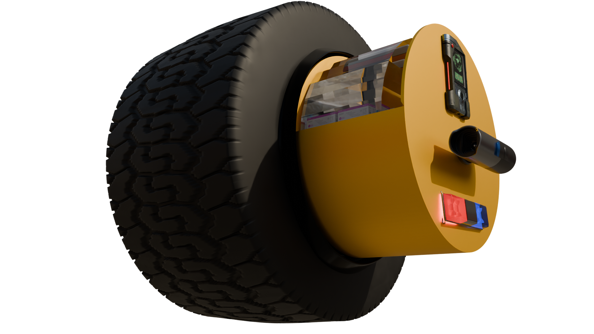
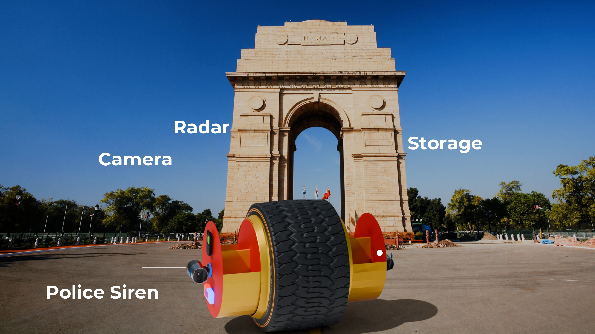
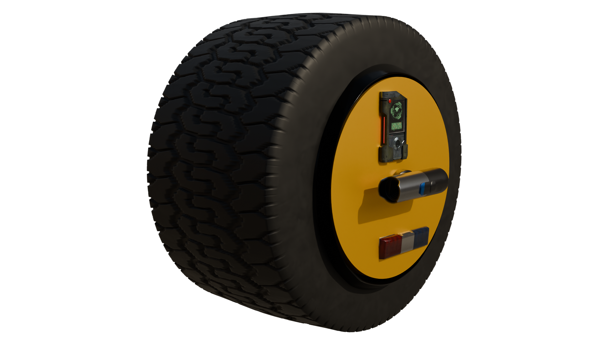

Proto is an advanced rolling robot designed by Mr. Raushan Kumar in India to revolutionize emergency rescue operations and logistics. Engineered for speed, efficiency, and reliability, Proto is built to navigate through tough terrains and deliver essential goods, medical supplies, and rescue assistance swiftly.
At Proto, we are committed to leveraging innovation and automation to create a safer and more connected world. With its ability to carry up to 10 kg and travel at an impressive 120 km/h, Proto is not just a delivery robot—it’s a lifesaving innovation.
We believe in the power of technology to save lives and enhance accessibility. Our vision is to integrate robotics, artificial intelligence, and automation to create smart, self-sufficient solutions that address real-world challenges in healthcare, logistics, and emergency response.


Proto is an advanced AI-powered rolling robot designed for high-speed emergency response, medicine delivery, and smart logistics automation. It operates using a combination of artificial intelligence, autonomous navigation, and real-time monitoring systems, ensuring swift, efficient, and secure deliveries across various terrains. Its self-balancing rolling mechanism enables it to maintain stability while moving at high speeds, making it an ideal solution for critical applications like disaster response and last-mile logistics.
SAt the core of Proto's functionality is its AI-based autonomous navigation system, which leverages LiDAR sensors, ultrasonic sensors, GPS, and real-time mapping to detect obstacles and determine the most efficient routes. The robot's AI continuously analyzes the environment, allowing it to navigate safely through urban roads, rough landscapes, and even disaster-hit zones. If required, Proto can also be controlled remotely, providing flexibility in high-risk or mission-critical scenarios.
One of Proto’s standout features is its high-speed mobility, reaching up to 120 km/h. This makes it significantly faster than traditional delivery systems, ensuring that emergency medical supplies, rescue kits, and essential goods reach their destinations without delay. Its gyro-stabilization technology helps it maintain balance at high speeds, allowing smooth movement across diverse terrains.

Raushan Kumar, a visionary entrepreneur and innovator, is the mastermind behind Proto, a cutting-edge rolling robot designed to revolutionize emergency rescue operations, medicine delivery, and smart logistics. With a passion for leveraging AI and robotics for real-world impact, he developed Proto to provide high-speed, autonomous mobility in critical situations.
Under his leadership, Proto is setting new standards in robotic automation, ensuring faster, safer, and more efficient solutions for healthcare, disaster response, and last-mile delivery.
All Right Reserved Vayu Galaxy